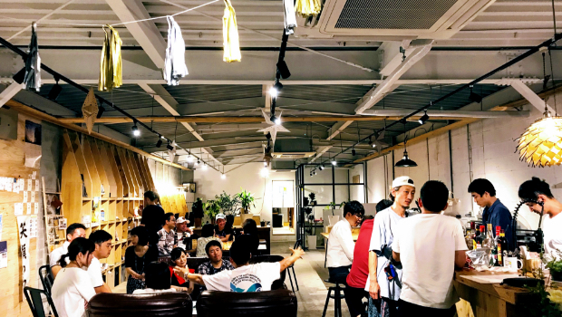
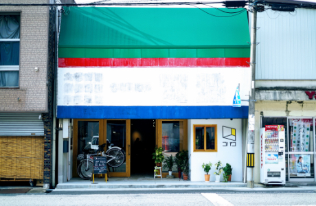

COMPANY
MISSION
わたし達のミッション

日本の地方における人口減少は以前から大きな問題になっています。
緩やかな人口減少の中でワクワクする人生を送るために、私たちはどうすれば良いのでしょうか。
人生の時間の1/3は仕事に費やすと言われています。
人生の1/3の時間を過ごす仕事の時間を過ごす仕事の時間をいかに有意義に過ごすか。
このことは、人生の質に大きく影響すると私たちは考えています。
私たちは、「ローカルからワクワクするしごとを創ろう」というミッションを作りました。
時間や場所にとらわれない、新しいはたらき方ができるようになれば、自分自身の人生を歩むことができる人が増えると考えています。
私たちは、クライアントとともにワクワクする仕事を創っていく存在であり続けます。
MEMBER
わたし達のメンバー
谷口悠一
公認会計士・税理士
エンジニア、公務員、税理士法人、有限責任監査法人トーマツ、トーマツベンチャーサポート株式会社を経て独立。2017年兵庫県佐用町にて会計事務所およびコバコ株式会社を設立。泊まれるコワーキング「コバコWork&Camp」の運営、自治体向けコンサルティングなど、ローカルからワクワクする仕事を創る後方支援を行っている。兵庫県佐用町出身。
エンジニア、公務員、税理士法人、有限責任監査法人トーマツ、トーマツベンチャーサポート株式会社を経て独立。2017年兵庫県佐用町にて会計事務所およびコバコ株式会社を設立。泊まれるコワーキング「コバコWork&Camp」の運営、自治体向けコンサルティングなど、ローカルからワクワクする仕事を創る後方支援を行っている。兵庫県佐用町出身。
谷口悠一
公認会計士・税理士
谷口悠一
公認会計士・税理士
エンジニア、公務員、税理士法人、有限責任監査法人トーマツ、トーマツベンチャーサポート株式会社を経て独立。2017年兵庫県佐用町にて会計事務所およびコバコ株式会社を設立。泊まれるコワーキング「コバコWork&Camp」の運営、自治体向けコンサルティングなど、ローカルからワクワクする仕事を創る後方支援を行っている。兵庫県佐用町出身。
ABOUT
会社概要
| 会社名 | コバコ株式会社 cobaco inc. |
| 所在地 |
本社 〒679-5301 兵庫県佐用郡佐用町佐用2828-10
大阪事務所 〒550-0015 大阪市西区南堀江2-5-1 エイトビル8F |
| 役員 | 代表取締役 谷口悠一 |
| 設立 | 2017年12月19日 |
| 代表番号 | 0790-65-9637 |
| 事業内容 |
・戦略/新規事業コンサルティング
・デジタルテクノロジーコンサルティング ・経営管理業務のフロー設計、アウトソーシング受託 ・店舗デザイン改装コンサルティング ・Eコマースサイトデザイン、コーディング、コンサルティング ・泊まれるコワーキング運営 ・webメディア運営 |
ACCESS
アクセス
